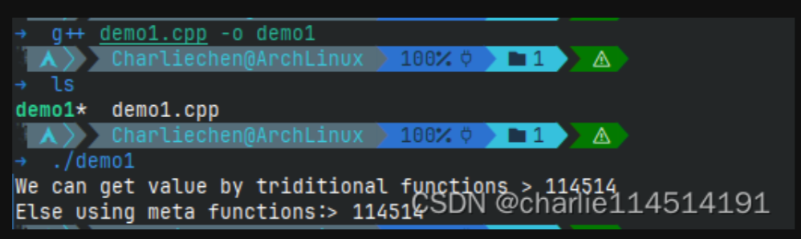
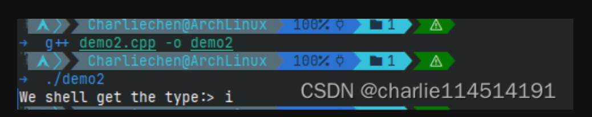
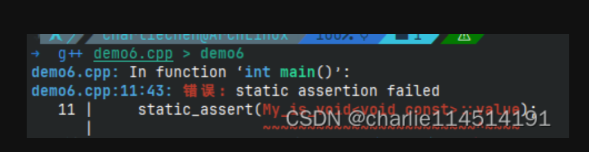

CPP Con 2020:Type Traits I
CPP Con 2020:Type Traits I
先谈谈Meta Programming
啥是元编程呢？很简单，就是那些将其他程序当作数据来进行处理和传递的编程（私人感觉有点类似于函数式？）这个其他程序可以是自己也可以是其他程序。元编程可以发生在编译时也可以发生在运行时。
还是有点懵？实际上你就认为元编程是一个生成代码的编程技术就好。（StackOverflow:What exactly is metaprogramming? - Stack Overflow, MetaPogramming is just a “Writing code that write code”, “Code that generate code”）
元函数
我们先回忆一下啥是函数吧：函数是一个子程序，可以接受若干输入，返回输出。
void a_simple_function();
int another_echo(int retWhat, const char* descriptions){
using std::cout, std::endl;
cout << descriptions << endl;
retun retWhat;
}一般的函数跟外界交互的正常方式是使用一个return返回值：
int echo_value(int val){return val;}或者是传递一个引用，或指针，这也是一种方式，不过不被主流代码规范所推崇（太混乱）
#define OUT
void
getValueByRef(OUT int& gettee)
{
gettee = 42;
}
void
getValueByPointer(OUT int* gettee)
{
if( is_invalid_pointer(gettee) )
throw MY_PTR_EXCEPTION;
*gettee = 42;
}编译器将会检查返回是否在语法层面上合法：举个例子就是你声明返回A，就不可以返回B。保证函数的签名和实际的行为一致。
那元函数呢？实际上元函数不是一个函数！哈哈，他是一个类或者struct！他是不被语法层面上所约束的，另一个意思就是：不存在原生的支持！要自己手撮，我们需要规范来约束自己元编程的规范。
在C++里，元编程是使用模板完成的，一个带有0个或者是多个模板参数的类是我们的元编程的核心！他的行为跟函数很类似：都是接受若干输入，返回一个输出！
看一个例子就好：
struct Offer114514{
static constexpr int value = 114514;
};有点奇怪？哈哈，这样用：
#include <iostream>
using std::cout, std::endl;
int get114514(){
return 114514;
}
struct Get114514{
static constexpr int value = 114514;
};
int main()
{
cout << "We can get value by triditional functions > " << get114514() << endl;
cout << "Else using meta functions:> " << Get114514::value << endl;
}
只是这样就没意思了。我们继续使用更加高级的，函数做不到的：
#include <iostream>
#include <ostream>
void displayTypeInfo(const char* type){
std::cout << "We shell get the type:> " <<type << std::endl;
}
template<typename EchoType>
struct Echo{
using type = EchoType;
};
int main()
{
typename Echo<int>::type value = 114514;
displayTypeInfo(typeid(value).name());
}
确实有点多此一举这个例子，但是这里展现出来元函数的一个重要特点，他可以完成类型操作，这里就是存储了一个type信息，我们之后到哪里都可以传递他进入其他函数内部使用！
再看一些例子！
Square Storage
#include <iostream>
template <int value_stored>
struct StaticValueStorage{
static constexpr int square(const int val){return val* val;}
static constexpr int value = square(value_stored);
};
int main()
{
static_assert(4 == StaticValueStorage<2>::value);
std::cout << "Welp! nothing wrong then!";
}推介使用C++17以上编译，否则不会通过。
Identifiers
template<auto val>
struct Identity
{
using type = decltype(val);
static constexpr auto value = val;
};
struct YepMe{
int age;
int id;
public:
constexpr YepMe(int a, int id):age(a), id(id){};
friend constexpr bool operator==(const YepMe& p1, const YepMe& p2){
return p1.age == p2.age && p1.id == p2.id;
}
};
int main()
{
static_assert(114514 == Identity<114514>::value);
constexpr YepMe me{1, 114514};
static_assert(YepMe(1, 114514) == Identity<me>::value);
}啊哈，关于这种非参数模板不是我们的重点，我们已经看到这里的元编程特性可以展现更多的事情
Type MetaFunctions
我们看到存在这种”奇怪“的技术：
template<typename T>
struct StorageType{
using type = T;
}
int main()
{
StorageType<int>::type value = 1; // questions: is this really valid in C++?
}可以完成这样表达的，不过，为了更好的表意，当我们先要明确我们表达的就是类型，我们完全可以加上关键字：
typename我们这样就可以操作类型了
一些技巧
查看标准库，我们时常会使用value或者是type，标准库提供了一种方便的简写：
对于那些值的元函数，我们会使用_v结尾，
对于那些类型的元函数，我们会以_t作为结尾
例子如下：
template<auto val> struct ValueHolder { using type = decltype(val); static constexpr auto value = val; }; template<auto val> inline constexpr auto ValueHolder_v = ValueHolder<val>::value; template<auto val> using ValueHolder_t = typename ValueHolder<val>::type; int main() { static_assert( 114 == ValueHolder_v<114> ); static_assert( std::is_same_v<int, ValueHolder_t<42>> ); }这些约定可以简化我们的调用，真的没人喜欢看又臭又长的模板
一些有用的metafunction
std::integral_constant
template<typename T, T v>
struct integral_constant
{
using value_type = T;
using type = integral_constant<T, v>;
constexpr operator value_type() const noexcept{
return value; // 这里是类型转换
}
constexpr value_type operator()() const noexcept{
return value; // 这里是调用法转换
}
};干嘛的呢？封装常量的。我们下面就开始有了type_traits的一个根基：bool_constant
template<bool B>
using bool_constant = integral_constant<bool, B>;
using true_type = bool_constant<true>; // If confused, consider as true
using false_type = bool_constant<false>;好了！现在我们的true和false就成为了一个元函数，访问是不是真的只需要访问值就行。
C++17 type_traits
一元type_traits
约束如下：
- 类模板
- 一元参数模板
- 可以默认和拷贝构造
- 必须从std::integral_constant那里public继承！基类成员不应该被隐藏
二元type_traits
约束如下：
- 类模板
- 二元参数模板
- 可以默认和拷贝构造
- 必须从std::integral_constant那里public继承！基类成员不应该被隐藏
变换type_traits
约束如下：
- 类模板
- 一元参数模板
- 必须定义个type来表明自己的类型
- 没有默认和拷贝构造要求
- 没有继承的要求。
std::is_void
为了查看type_traits是如何实现的，我们首先来看看一个简单的例子：is_void，他判断一个类型是不是void!
template<typename T>
struct is_void : std::false_type{}; // 泛化是false
template<> // 特化
struct is_void<void> : std::true_type{}; // 特化为true_type那问题来了，你试试看这样能不能通过static_assert呢？
#include <type_traits>
template<typename T>
struct My_is_void : std::false_type{};
template<>
struct My_is_void<void> : std::true_type{};
int main()
{
static_assert(My_is_void<void>::value);
static_assert(My_is_void<void const>::value);
}
啊哈，结果很明显了，并不会，一种办法有点蠢：
#include <type_traits>
template<typename T>
struct My_is_void : std::false_type{};
template<>
struct My_is_void<void> : std::true_type{};
template<>
struct My_is_void<void const> : std::true_type{};
template<>
struct My_is_void<void volatile> : std::true_type{};
template<>
struct My_is_void<void volatile const> : std::true_type{};
int main()
{
static_assert(My_is_void<void>::value);
static_assert(My_is_void<void const>::value);
}但是看着很抽象，硬编码，不是一个很好的解决方案
Transformation traits
所以我们有了类型变换元函数，请看例子：
remove_const
remove_const<int> -> int
remove_const<const int> -> int
remove_const<const volatile int> -> volatile int;
remove_const<int*> -> int*
// Important
remove_const<const int*> -> const int* // 指向const int，指针本身不const
remove_const<int* const> -> int*那如何实现呢？很简单，只需要让带有修饰符号的模板特殊匹配就好：
template<typename T>
struct remove_const : type_identity<T>{}
template<typename T>
struct remove_const<T const> : type_identity<T>{}
// use _t
template<typename T>
using remove_const_t = typename remove_const<T>::type;